"One Man Army"
A topdown 3D battle-royale individual game project.
2020
Introduction
Nothing but passion in games pushed me to build this game. This project is my first online multiplayer game development experience.
Just like the name of the game, I built this game independently with "One Man Army". Back in the days, Battle-Royale was no doubt the hottest game genre, a few representatives, such as H1Z1, PUBG, Fortnite, all made huge market successes. To discover the reason behind this phenomenon while continuing polishing my Unity development skill, I launched this project.
Just like the name of the game, I built this game independently with "One Man Army". Back in the days, Battle-Royale was no doubt the hottest game genre, a few representatives, such as H1Z1, PUBG, Fortnite, all made huge market successes. To discover the reason behind this phenomenon while continuing polishing my Unity development skill, I launched this project.
Game Design
After a few research, I figured out it was most likely that the "King of Hill" core mechanics was the key factor forging the glory of the success. Imagine how much hormones would be secreted by the combination of shrinking playable area + only one winner + intensive player competition. The market proved such combination was especially attractive to young energetic teens.
However, this mechanics had shortcomings too. Among them, a critical one that this genre was designed for "winner takes all", which discouraged low-skilled or casual players continue playing in a long-term. I soon wondered if it was possible to make a relatively more inclusive and casual gameplay, with a set of mechanics that could balance experiences between the high-skilled and the casual players.
While brainstorming, I thought I could have gotten some inspirations from Nintendo, since they were really good at making party game for a casual family gameplay. Inspired by a few games like Mario Cart, Battle of Balls(A popular Chinese mobile game, 《球球大作战》), I came up with an early design sketch:
MDA framework:
Mechanics:
- Max to 8 players, multiplayer battle royale gameplay
- Instead of a shrinking map, players can force the defeated player to join his/her side.
- There will not only be one winner, but instead, after a fix game time, players will be rewarded based on score ranking.
- A revolt mechanics, allowing defeated player back to independent but at a price of losing scores and a long CD.
- Topdown character control.
- Weapon control and target detection.
- Randomly generated map resources.
- Gain exp and level by collecting resources and combating with other players.
- Level up to learn more powerful skills.
- Keeping highest score for a long while will be revealed on the minimap with a bounty.
- In-game communication tools.
Dynamics:
- Once spawned, players will navigate the map to collect resources (farm).
- Players will face a decision making to either fight or flee when they encounter an enemy player.
- Once level up, players will pick the skill that best fit the current battle field situation.
- Players must aware of the dynamic score ranking, which could give everyone more motivation.
- Once being conquered, players may analyze if it is a good situation to revolt or continuing serving the master, to make the strategy based on each choice's potential score growth.
- Once leading a team (conquered a few other players), player must aware of potential betray.
- Bottom players will be free from death punishment since kill reward is based on player score.
- Top players have to play well and carefully to defend their positions, otherwise a high bounty will be granted to lower ranking players.
- Players will use the communication tools as a pure socialization method or utilize it as part of their strategies.
Aesthetics:
- An intensive feeling with competition with other players.
- A strong feeling of gain, whenever pick up resources, level up, learn new skills, or win a fight.
- A proud sense when showoff skills and outplays.
- An experience of socialization.
- A joyful feeling with the toon + traditional Chinese art styles.
This early ideation process also served as a critical inspiration for my later experiences, such as:
A battle-royale topdown pixel game with shrinking map mechanics alternatives, click here.
A serious educational board game with shrinking map mechanics, click here.
However, this mechanics had shortcomings too. Among them, a critical one that this genre was designed for "winner takes all", which discouraged low-skilled or casual players continue playing in a long-term. I soon wondered if it was possible to make a relatively more inclusive and casual gameplay, with a set of mechanics that could balance experiences between the high-skilled and the casual players.
While brainstorming, I thought I could have gotten some inspirations from Nintendo, since they were really good at making party game for a casual family gameplay. Inspired by a few games like Mario Cart, Battle of Balls(A popular Chinese mobile game, 《球球大作战》), I came up with an early design sketch:
MDA framework:
Mechanics:
- Max to 8 players, multiplayer battle royale gameplay
- Instead of a shrinking map, players can force the defeated player to join his/her side.
- There will not only be one winner, but instead, after a fix game time, players will be rewarded based on score ranking.
- A revolt mechanics, allowing defeated player back to independent but at a price of losing scores and a long CD.
- Topdown character control.
- Weapon control and target detection.
- Randomly generated map resources.
- Gain exp and level by collecting resources and combating with other players.
- Level up to learn more powerful skills.
- Keeping highest score for a long while will be revealed on the minimap with a bounty.
- In-game communication tools.
Dynamics:
- Once spawned, players will navigate the map to collect resources (farm).
- Players will face a decision making to either fight or flee when they encounter an enemy player.
- Once level up, players will pick the skill that best fit the current battle field situation.
- Players must aware of the dynamic score ranking, which could give everyone more motivation.
- Once being conquered, players may analyze if it is a good situation to revolt or continuing serving the master, to make the strategy based on each choice's potential score growth.
- Once leading a team (conquered a few other players), player must aware of potential betray.
- Bottom players will be free from death punishment since kill reward is based on player score.
- Top players have to play well and carefully to defend their positions, otherwise a high bounty will be granted to lower ranking players.
- Players will use the communication tools as a pure socialization method or utilize it as part of their strategies.
Aesthetics:
- An intensive feeling with competition with other players.
- A strong feeling of gain, whenever pick up resources, level up, learn new skills, or win a fight.
- A proud sense when showoff skills and outplays.
- An experience of socialization.
- A joyful feeling with the toon + traditional Chinese art styles.
This early ideation process also served as a critical inspiration for my later experiences, such as:
A battle-royale topdown pixel game with shrinking map mechanics alternatives, click here.
A serious educational board game with shrinking map mechanics, click here.
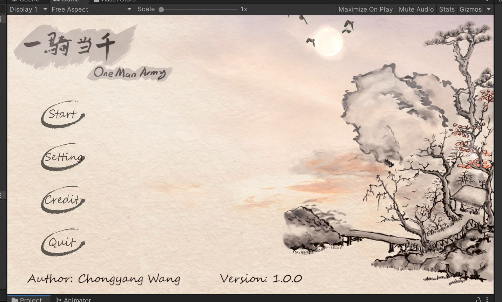
Main Menu UI
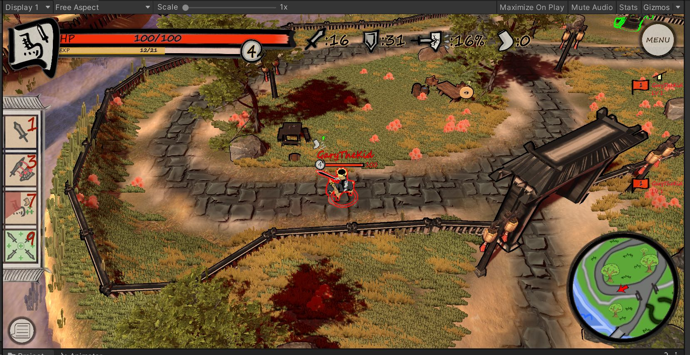
An Early Game Screenshot
Aesthetic Decision Showcase
UIs
Game Scene
Development Implementation
The game was crafted iteratively with Unity URP, Photonnetworking Services, Photoshop, Apple pencil (original painting), GarageBand (music), Blender (modeling), including scenes for Menu, Lobby, and Game.
The early prototype only included a sketchy MVP (minimal viable product), with only the core mechanics: 2 players join the room and use basic attack to hit each other; The last one standing wins the game.
For the later iterations, I prototyped with the 8-player battle royale mechanism, character controllers, weapon/skill systems, animation, etc., built networking server and multiplayer mechanics using Photon, and programmed UI workflow and interfaces in UGUI. During the iteration process, I often playtested with my friends as well, collecting their feedback to improve the playability and aesthetics.
Finally, upon project ending, I painted a few teasers and UI artworks in Chinese traditional art style and calligraphy using Photoshop and my iPad.
The early prototype only included a sketchy MVP (minimal viable product), with only the core mechanics: 2 players join the room and use basic attack to hit each other; The last one standing wins the game.
For the later iterations, I prototyped with the 8-player battle royale mechanism, character controllers, weapon/skill systems, animation, etc., built networking server and multiplayer mechanics using Photon, and programmed UI workflow and interfaces in UGUI. During the iteration process, I often playtested with my friends as well, collecting their feedback to improve the playability and aesthetics.
Finally, upon project ending, I painted a few teasers and UI artworks in Chinese traditional art style and calligraphy using Photoshop and my iPad.
Intro of Early Development Process
Highlights
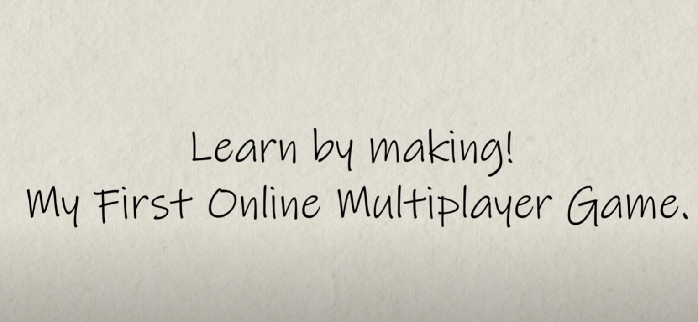
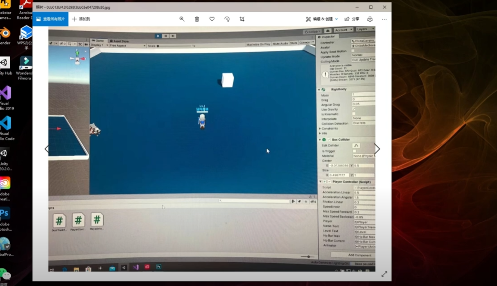
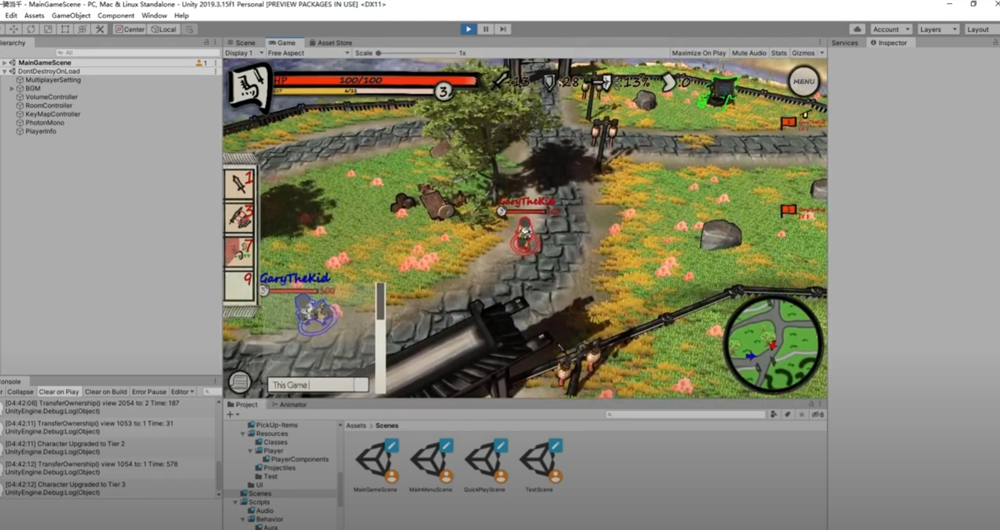
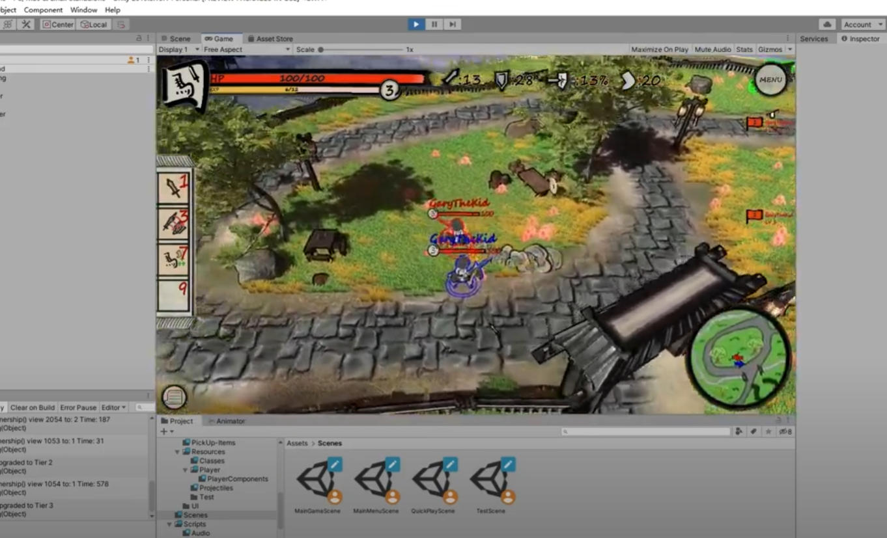
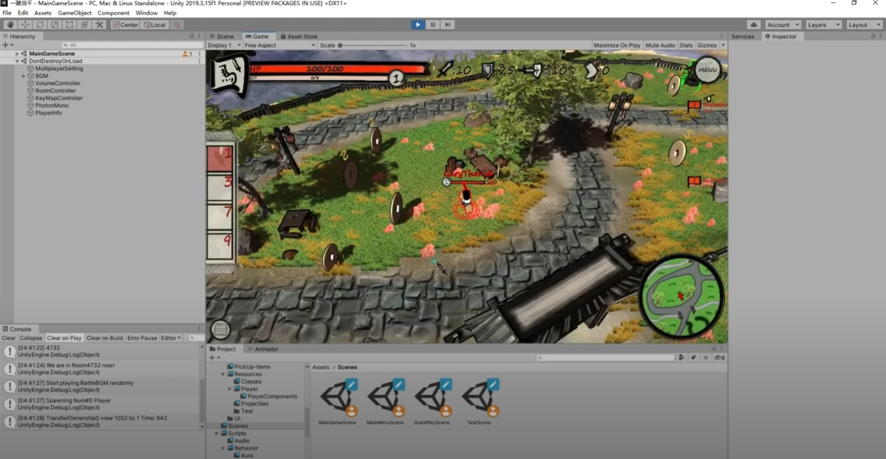
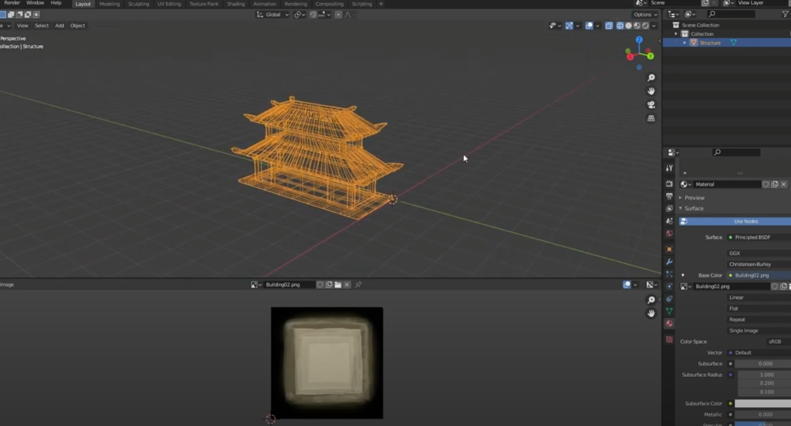
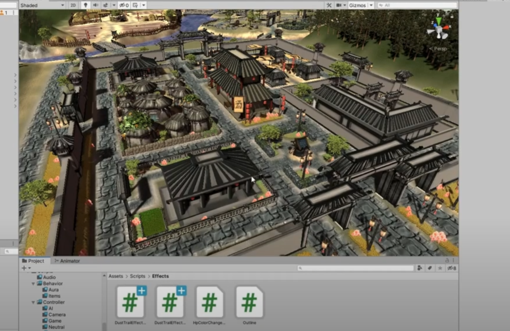
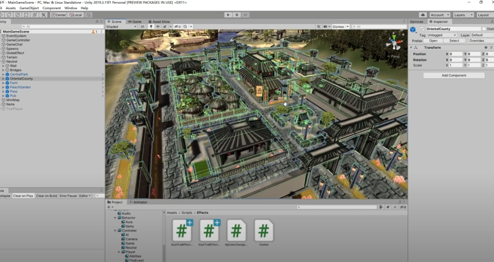
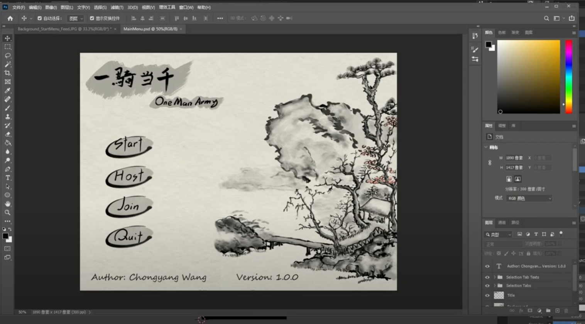
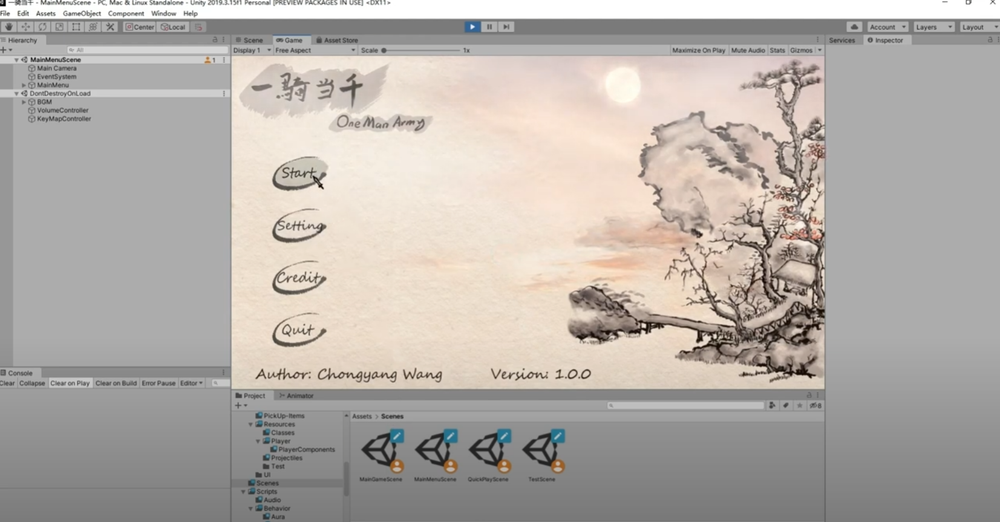
×